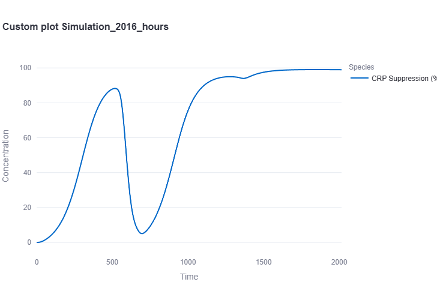

Example Use Case #1
Crohn's Disease model
Paper:
Dwivedi G, Fitz L, Hegen M, Martin SW, Harrold J, Heatherington A, Li C. (2014). A multiscale model of interleukin-6-mediated immune regulation in Crohn's disease and its application in drug discovery and development. CPT Pharmacometrics Syst Pharmacol, 3(1):e89. doi: 10.1038/psp.2013.64. PMID: 24402116
Model: BIOMD0000000537
Note: The specific responses to queries may differ from the ones provided here, depending on the release version of Talk2Biomodels and the large language model (LLM) utilized.
General questions about the model
Q: Search for a model on BioModels database related to a search term
Search for all the BioModels on Crohn's Disease
Answer
| # | BioModel ID | BioModel Name | Format | Submission Date |
|---|---|---|---|---|
| 1 | BIOMD0000000535 | Dwivedi2014 - Crohns IL6 Disease model - Anti-IL6 Antibody | SBML | 2014-08-04 |
| 2 | BIOMD0000000536 | Dwivedi2014 - Crohns IL6 Disease model - sgp130 activity | SBML | 2014-08-04 |
| 3 | BIOMD0000000537 | Dwivedi2014 - Crohns IL6 Disease model - Anti-IL6R Antibody | SBML | 2014-08-04 |
Q: Get model description
Briefly describe the BioModel 537
Answer
Description:
This model consists of four interconnected models that explore different aspects of Crohn's disease related to Interleukin-6 (IL-6) inhibition. The models include:
- Healthy Volunteer model
- Crohn's Disease - IL-6 Antibody
- Crohn's Disease - sgp130FC
- Crohn's Disease - IL-6Ra Antibody
The primary focus is on simulating the differential activity of various ligands on IL-6 signaling, which impacts the activity of Signal Transducer and Activator of Transcription 3 (STAT3) and the production of the biomarker C-Reactive Protein (CRP).
The model is detailed in the article titled A multiscale model of interleukin-6-mediated immune regulation in Crohn's disease and its application in drug discovery and development, published in CPT Pharmacometrics & Systems Pharmacology in 2014.
This model is hosted on the BioModels Database and can be identified by the ID BIOMD0000000537.
Q: Ask about publication data of the model (It will remember the model number)
When and where was this model published?
Answer
Publication Information
The model was published in the article titled "A multiscale model of interleukin-6-mediated immune regulation in Crohn's disease and its application in drug discovery and development."
Publication Details:
- Authors: Dwivedi G, Fitz L, Hegen M, Martin SW, Harrold J, Heatherington A, Li C.
- Journal: CPT Pharmacometrics & Systems Pharmacology
- Publication Date: 2014
- Volume: 3
- Article Identifier: e89
- Link to Article: PubMed
This study discusses the development of a multiscale systems model for understanding IL-6-mediated immune regulation in Crohn's disease and its implications for drug discovery.
Interrogate model species and annotations
Q: Display all parameters related to drug dosage.
Show me the parameters related to drug dosing regimen in the model
Answer
The parameters related to the drug dosing regimen in the BioModel 537 include:
- Dose: The amount of drug administered in a single dose.
- DoseQ2W: The dosage administered every two weeks.
- Initial for Dose: Initial concentration for the standard dose.
- Initial for DoseQ2W: Initial concentration for the dosage administered every two weeks.
- infusionTime: The duration of the drug infusion.
These parameters are crucial for defining how the drug is administered over time and help in modeling the effects of different dosing schedules on the pharmacokinetics and pharmacodynamics of the drug.
Q: Show annotated species of the model.
get model annotations
Answer (snippet)
Q: Show all species of a specific type in the model
show all interleukins in this model
Answer
Q: Interrogate specific species in the model
what is R in this model?
Answer
Ask questions to the published article using Retrieval-Augmented Generation (RAG)
Q: Ask questions to the published article concerning the model species. To utilize Retrieval-Augmented Generation (RAG) for answering questions about the model, the PDF file of the article should be uploaded first. The article can be found here.
Query the uploaded article to suggest a possible description and role of the parameter R in the model.
Answer
The parameter R in the model is associated with the dynamics of IL-6 signaling in the context of Crohn's disease. While the specific role of R is not explicitly detailed in the provided excerpts, it can be inferred that R is likely involved in the regulation of receptor interactions or signaling pathways related to IL-6.
Possible Description and Role of Parameter R:
Description: R may represent a receptor or a regulatory component in the IL-6 signaling pathway, potentially influencing the binding and activity of IL-6 or its receptors (such as IL-6R).
Role: The parameter R could play a critical role in modulating the effects of IL-6 signaling, particularly in how the immune system responds to IL-6 in the context of Crohn's disease. It may affect the concentration of downstream signaling molecules or biomarkers, such as C-Reactive Protein (CRP), which is a key indicator of inflammation in this disease.
In summary, while the exact function of R is not explicitly stated, it is likely integral to the signaling dynamics of IL-6 and its impact on immune regulation in Crohn's disease. Further details from the model or additional context from the article may provide more specific insights into its role.
Q: Access simulation time from the publication. To utilize Retrieval-Augmented Generation (RAG) for answering questions about the model, the PDF file of the article should be uploaded first. The article can be found here.
Query the uploaded article and return the model's simulation duration time mentioned in the paper.
Answer
The model in the paper simulates the pharmacological effects over a duration of 12 weeks. This is indicated in the context of intravenous drug administration at 4-week intervals, where the effects on biomarkers such as serum CRP are assessed throughout this period.
Q: Show concentrations of model species
show concentrations of all species in this model in a table format
Answer
| Species Name | Compartment | Initial Concentration (nmol/l) |
|---|---|---|
| IL6{serum} | Serum | 0.0004356 |
| sgp130{serum} | Serum | 3.9 |
| sR_IL6_sgp130{serum} | Serum | 0.0874 |
| CRP{serum} | Serum | 221.064 |
| sR{serum} | Serum | 4.2535 |
| sR_IL6{serum} | Serum | 0.0011 |
| Ab{serum} | Serum | 2.3818e-29 |
| Ab_sR{serum} | Serum | 6.1044e-26 |
| Ab_sR_IL6{serum} | Serum | -7.4133e-29 |
| CRP Suppression (%) | Serum | -0.0 |
| CRP (% of baseline) | Serum | 100.0 |
| gp130{liver} | Liver | 0.3889 |
| R_IL6_gp130{liver} | Liver | 6.5994e-05 |
| sR_IL6{liver} | Liver | 0.0009762 |
| R | Liver | 0.4382 |
| IL6{liver} | Liver | 0.0007257 |
| R_IL6 | Liver | 1.6004e-05 |
| Ractive{liver} | Liver | 0.7654 |
| STAT3{liver} | Liver | 0.7775 |
| pSTAT3{liver} | Liver | 9.2225 |
| CRP{liver} | Liver | 158.325 |
| sR{liver} | Liver | 6.0870 |
| CRPExtracellular | - | 409.775 |
| sgp130{liver} | Liver | 5.5897 |
| sR_IL6_sgp130{liver} | Liver | 0.1163 |
| Ab_sR{liver} | Liver | 8.6162e-26 |
| Ab{liver} | Liver | 2.2002e-29 |
| Ab_R | - | 2.0337e-27 |
| Ab_sR_IL6{liver} | Liver | -3.0779e-29 |
| sR_IL6{gut} | Gut | 0.0013 |
| gp130{gut} | Gut | 0.3750 |
| R_IL6_gp130{gut} | Gut | 8.4489e-05 |
| Ractive{gut} | Gut | 0.9803 |
| STAT3{gut} | Gut | 0.6106 |
| pSTAT3{gut} | Gut | 9.3894 |
| geneProduct | Gut | 159.803 |
| sR{gut} | Gut | 6.0641 |
| IL6{gut} | Gut | 0.0093 |
| sgp130{gut} | Gut | 5.5697 |
| sR_IL6_sgp130{gut} | Gut | 0.1363 |
| Ab{gut} | Gut | 2.1588e-29 |
| Ab_sR{gut} | Gut | 2.6206e-26 |
| Ab_sR_IL6{gut} | Gut | -1.2092e-28 |
| Ab{peripheral} | Peripheral | 1.6792e-29 |
Q: Show parameter values
show parameter values in this model
Answer
| Parameter Name | Initial Value | Unit |
|---|---|---|
| Values[kRLOn] | 0.384 | |
| Values[kRLOff] | 1.92 | |
| Values[kgp130On] | 20.52 | |
| Values[kgp130Off] | 1.026 | |
| Values[kRAct] | 155.0 | |
| Values[kRint] | 1.96 | |
| Values[kRsynth] | 0.0685 | |
| Values[kRintBasal] | 0.1561 | |
| Values[ksynthIL6] | 0.0063 | |
| Values[kdegIL6] | 34.82 | |
| Values[kdegCRP] | 0.36 | |
| Values[KmSTATDephos] | 5.34 | |
| Values[VmSTATDephos] | 0.62 | |
| Values[VmRDephos] | 0.525 | |
| Values[KmRDephos] | 155.3 | |
| Values[kcatSTATPhos] | 145.0 | |
| Values[KmSTATPhos] | 219.0 | |
| Values[KmProtSynth] | 10.0 | |
| Values[VmProtSynth] | 330.0 | |
| Values[kCRPSecretion] | 0.5 | |
| Values[ksynthCRP] | 0.42 | |
| Values[ksynthsR] | 0.1 | |
| Values[kdegsR] | 0.3 | |
| Values[ksynthsgp130] | 3.9 | |
| Values[kdegsgp130] | 1.0 | |
| Values[ksynthIL6Gut] | 0.036 | |
| Values[kdegIL6Gut] | 1.0 | |
| Values[kdistTissueToSerum] | 0.8473 | |
| Values[kdistSerumToTissue] | 1.2125 | |
| Values[kRShedding] | 0.0054 | |
| Values[kintActiveR] | 0.01 | |
| Values[kIL6RBind] | 1000.0 | |
| Values[kIL6RUnbind] | 2.5 | |
| Values[infusionTime] | 1.0 | |
| Values[kAbSerumToLiver] | 0.0208 | |
| Values[kAbLiverToSerum] | 0.0208 | |
| Values[kAbSerumToGut] | 0.0104 | |
| Values[kAbGutToSerum] | 0.0208 | |
| Values[VSerum] | 2.88 | |
| Values[VLiver] | 2.88 | |
| Values[VGut] | 1.44 | |
| Values[VPeriph] | 0.576 | |
| Values[QSerumLiver] | 0.06 | |
| Values[QSerumGut] | 0.03 | |
| Values[QSerumPeriph] | 0.001 | |
| Values[kAbSerumToPeriph] | 0.000347 | |
| Values[kAbPeriphToSerum] | 0.001736 | |
| Values[kdegAb] | 0.0018 | |
| Values[Dose] | 300.0 | |
| Values[DoseQ2W] | 0.0 | |
| Values[Initial for CRP] | 221.0637 | |
| Values[Initial for DoseQ2W] | 0.0 | |
| Values[Initial for Dose] | 300.0 |
Model simulation and plotting
Q: Simulate the model for 12 weeks (= 2016 hours), and give the simulation result a name.
Simulate the model for 2016 hours with 300 intervals. Set the initial concentration of Dose to 200 mg. Call this result `Treatment 4wk`.
Answer
Figure:

Table:
| Time | sR{serum} | sgp130{serum} | R_IL6_gp130{liver} | IL6{serum} | Ab{serum} | R | ... |
|---|---|---|---|---|---|---|---|
| 0.0 | 4.253507 | 3.900000 | 6.599359e-05 | 0.000436 | 2.381820e-29 | 0.438236 | ... |
| 1.0 | 0.000031 | 3.901765 | 6.420660e-05 | 0.000638 | 6.753452e+02 | 0.000178 | ... |
| 2.0 | 0.000037 | 3.905215 | 6.248857e-05 | 0.000739 | 6.522828e+02 | 0.000070 | ... |
| 3.0 | 0.000043 | 3.907882 | 6.013415e-05 | 0.000756 | 6.303828e+02 | 0.000049 | ... |
| 4.0 | 0.000049 | 3.909825 | 5.762284e-05 | 0.000755 | 6.095828e+02 | 0.000039 | ... |
| ... | ... | ... | ... | ... | ... | ... | ... |
Q: Show only CRP-related species, as it is one of the clinically-relevant measurement for a successful treatment.
Plot only CRP-related species.
Answer
Figure:

Q: Review, how drug treatment influences CRP concentration in the serum at any arbitrary time point, e.g. 12 weeks after the initial drug treatment (2016 hours).
What is the CRP concentration in the serum at the end of the simulation?
Answer
The CRP concentration in the serum at the end of the simulation is approximately 220.52 nmol.
Compare two treatment regimens and apply reasoning
Q: Administrate the drug treatment every two weeks by activating the DoseQ2W and deactivating Dose parameters.
Simulate the model again for 2016 hours with 300 intervals. Set the initial concentration of `DoseQ2W` to 200 and `Dose` to 0. Call this result `Treatment 2wk`.
Answer
Q: Compare the CRP values in both aforementioned cases. 'Treatment 2wk' should reduce CRP earlier than 'Treatment 4wk'.
Based on the CRP values in serum at the end of the simulation, which treatment would you recommend `Treatment 4wk` or `Treatment 2wk`?
Answer
At the end of the simulations, the CRP concentrations in the serum are as follows:
- Treatment 4wk: Approximately 220.52 nmol
- Treatment 2wk: Approximately 1.457 nmol
Based on these values, I would recommend Treatment 2wk, as it results in a significantly lower CRP concentration in the serum compared to Treatment 4wk. A lower CRP concentration indicates better suppression of inflammation. If you have any further questions or need additional insights, feel free to ask!
Compute the concentration of free drug in blood serum
Q: Reproduce Figure 4f from the paper for a 500mg dose.
Set the initial concentration of 'Dose' to 500 mg and simulate the model for 2016 hours with 300 intervals.
Plot Ab in serum.
Answer
Figure:
Simulate two antibodies with varying dissociation affinities
Q: Plot the current trajectory of CRP % suppression with the initial model parameters (kIL6RUnbind = 2.5). Compare the CRP suppression after 12 weeks of treatment. The authors expect 100% suppression of CRP after 12 weeks.
Simulate the model 537 for 2016 hours with 300 intervals. Save this simulation as 'Ab_2.5'.
Plot the trajectory of CRP % suppression.
Answer
Q: Set the parameter kIL6RUnbind to 250, decreasing the stability of the antibody-IL6R complex. Simulate the model and plot serum CRP % suppression. The authors expect ~10% suppression of CRP after 12 weeks.
Simulate the model for 2016 hours with 300 intervals, but set the parameter `kIL6RUnbind` to 250. Save this simulation as 'Ab_250'.
Plot the curve of CRP % suppression.
Answer
Q: Inquire about the effectiveness of the antibodies.
Which antibody 'Ab_250' or 'Ab_2.5' is more effective in reducing CRP in the blood serum at the end of the simulation?
Answer
At the end of the simulation:
- Ab_250 resulted in a final CRP level of approximately 219.77 nmol.
- Ab_2.5 resulted in a final CRP level of approximately 2.27 nmol.
Based on this data, Ab_2.5 is more effective in reducing CRP in the blood serum at the end of the simulation. If you have any further questions or need additional analysis, feel free to ask!
Parameter scanning
Q: Analyze the variability of the parameter kIL6RUnbind to evaluate how CRP levels in serum are influenced by the stability of the antibody-IL6R complex.
How will the concentration of CRP in serum change, if the parameter `kIL6RUnbind` were to be changed from 2 to 250 in steps of 20?